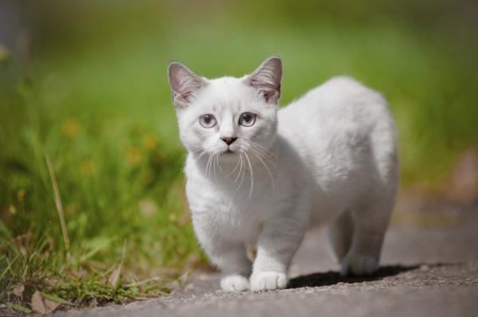
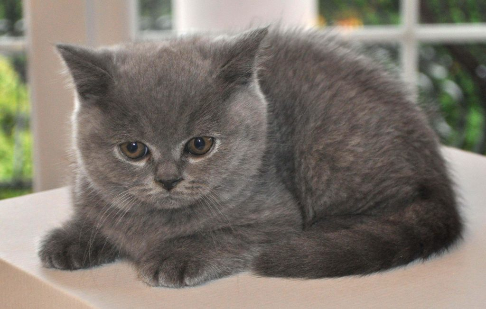
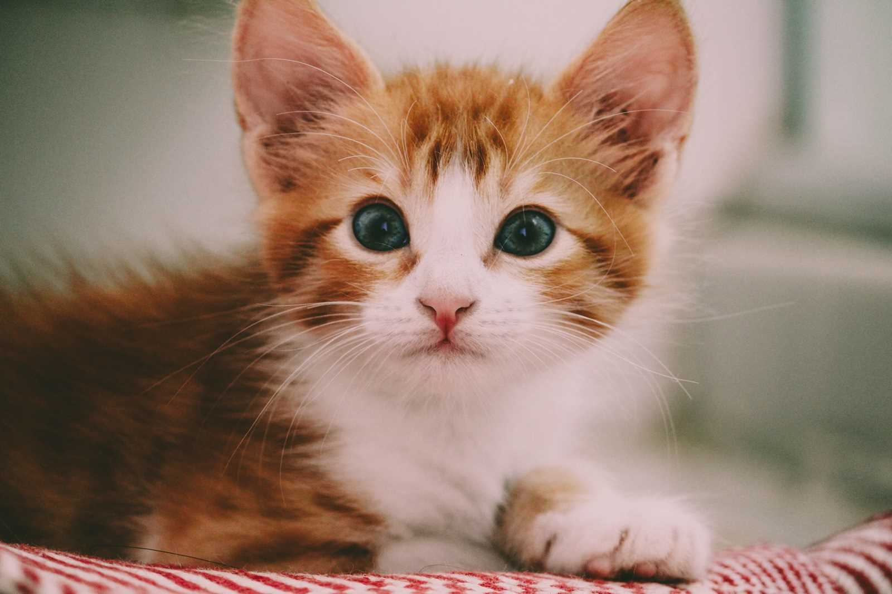

A los gatos les encanta las alturas, así que prepárate para encontrarlo encima de mesas o estanterías. Con un poco de imaginación y un toque de bricolaje puedes crear una divertidas estanterías por las que trepará y verá el mundo desde otra perspectiva.
 Ginger
 Tommy
 Lucifer